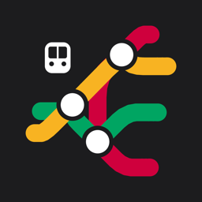
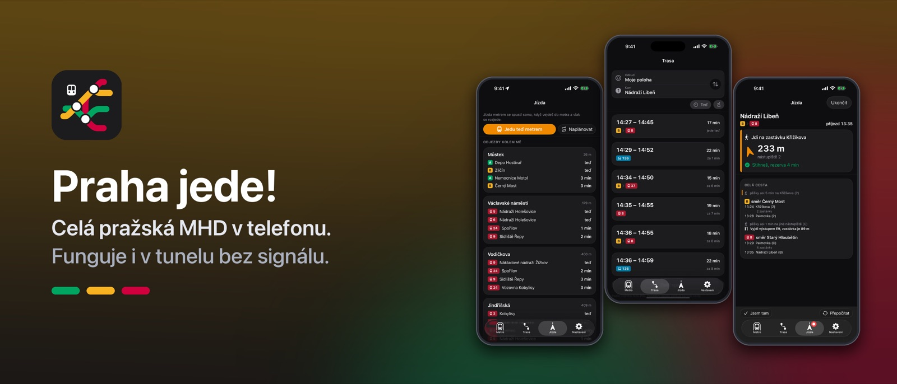

Praha jede!
Česky · English · Deutsch · Polski · Українська · Español · Italiano · Français
Zásady ochrany soukromí / Privacy Policy

Stihneš to.
- Od dveří ke dveřím. Metro, tramvaje, busy, vlaky, přívozy i lanovka, s přestupy a chůzí.
- Pohlídá přestup i výstup. Odpočet do odjezdu a upozornění i se zamčeným displejem.
- Správný vůz. Poradí, kam v metru nastoupit, abys byl hned u výstupu.
- Bez signálu. Celý jízdní řád PID má v telefonu, funguje i v tunelu.
- Bez účtu a sledování. Žádné reklamy, nic o tobě neodesílá.
Podpora
Chybu nebo připomínku pošlete na rudolf@melounek.cz. Pomůže, když napíšete, odkud kam jste jeli, kdy, a verzi aplikace (Nastavení → O aplikaci).
Časté dotazy
Odkud jsou jízdní řády?
Z otevřených dat Pražské integrované dopravy (PID GTFS). Aplikace si je aktualizuje sama: kalendář ověřuje denně, celý řád stahuje jen při změně, na Wi-Fi a při nabíjení. Ručně je obnovíte v Nastavení → Jízdní řád PID.
Ukazuje zpoždění?
Během vedené cesty ano, pro tramvaje, autobusy a vlaky, z veřejných poloh vozů PID. Metro jezdí podle jízdního řádu.
Jak funguje automatické rozpoznání jízdy?
Když vejdete do stanice metra a vlak se rozjede, aplikace sama spustí jízdu do Práce nebo Domů a před výstupem se ozve. Potřebuje polohu povolenou Vždy a nastavené stanice Doma a Práce. Vypnete ho v Nastavení → Poznat jízdu automaticky.
Proč nenaskočí Live Activity sama?
iOS nedovolí spustit Live Activity z pozadí. Přidejte si tlačítko „Jedu metrem“ na zamčenou obrazovku, na Akční tlačítko nebo do automatizace ve Zkratkách.
Odkud jsou místa?
Památky, nádraží a arény s hovorovými názvy jsou vlastní seznam aplikace. Restaurace, kavárny, hospody, obchody a další podniky jsou z OpenStreetMap, © přispěvatelé OpenStreetMap. Výtah, který aplikace nese, je ke stažení pod licencí ODbL 1.0: poi-osm.json.
Kde jsou moje data?
Jen v telefonu. Aplikace nemá účet ani analytiku. Více v zásadách ochrany soukromí.
Support
Send bugs and feedback to rudolf@melounek.cz. It helps to say where you travelled from and to, when, and the app version (Settings → About).
Frequently asked questions
Where do the timetables come from?
From the open data of Prague Integrated Transport (PID GTFS). The app updates them itself: it checks the calendar daily and downloads the full timetable only when it changes, on Wi-Fi and while charging.
Does it show delays?
During a guided trip, yes, for trams, buses and trains, from public PID vehicle positions. The metro runs to the timetable.
How does automatic ride detection work?
When you enter a metro station and the train starts moving, the app starts a trip to Work or Home and alerts you before your stop. It needs location set to Always and your Home and Work stations. Turn it off in Settings.
Where do places come from?
Sights, stations and arenas with their nicknames are the app's own list. Restaurants, cafés, pubs, shops and other businesses come from OpenStreetMap, © OpenStreetMap contributors. The extract shipped in the app is available under the ODbL 1.0: poi-osm.json.
Where is my data?
Only on your phone. The app has no account and no analytics. See the privacy policy.
Prag: U-Bahn, Tram & Bus
Der ganze Prager Nahverkehr auf dem iPhone: Verbindungen von Tür zu Tür, Hinweise zu Umstieg und Ausstieg, der richtige U-Bahn-Wagen und der komplette PID-Fahrplan offline, auch im Tunnel ohne Netz. Kostenlos, ohne Konto, ohne Werbung.
Support
Fehler und Anregungen bitte an rudolf@melounek.cz. Hilfreich sind Start, Ziel, Uhrzeit und die App-Version (Einstellungen → Über die App). Datenschutz.
Metro, tramwaje i autobusy
Cała komunikacja miejska Pragi na iPhonie: połączenia od drzwi do drzwi, alerty o przesiadce i wysiadaniu, właściwy wagon metra i pełny rozkład PID offline, nawet w tunelu bez zasięgu. Za darmo, bez konta, bez reklam.
Pomoc
Błędy i uwagi prosimy wysyłać na rudolf@melounek.cz. Pomoże, jeśli podasz skąd i dokąd jechałeś, kiedy, i wersję aplikacji (Ustawienia → O aplikacji). Prywatność.
Метро, трамваї, автобуси Праги
Увесь громадський транспорт Праги на iPhone: маршрути від дверей до дверей, сповіщення про пересадку й вихід, потрібний вагон метро та повний розклад PID офлайн, навіть у тунелі без сигналу. Безкоштовно, без акаунта, без реклами.
Підтримка
Про помилки й побажання пишіть на rudolf@melounek.cz. Допоможе, якщо вкажете, звідки й куди ви їхали, коли, і версію застосунку (Налаштування → Про застосунок). Конфіденційність.
Metro, tranvía y bus de Praga
Todo el transporte público de Praga en tu iPhone: rutas puerta a puerta, avisos de transbordo y de bajada, el vagón de metro correcto y el horario PID completo sin conexión, incluso en un túnel sin señal. Gratis, sin cuenta y sin anuncios.
Soporte
Envía errores y sugerencias a rudolf@melounek.cz. Ayuda indicar el origen y el destino, la hora y la versión de la app (Ajustes → Acerca de). Privacidad.
Metro, tram e bus di Praga
Tutti i mezzi pubblici di Praga sul tuo iPhone: percorsi porta a porta, avvisi per cambi e discesa, la carrozza giusta della metro e l'orario PID completo offline, anche in galleria senza segnale. Gratis, senza account, senza pubblicità.
Assistenza
Segnala errori e suggerimenti a rudolf@melounek.cz. Aiuta indicare partenza, destinazione, orario e la versione dell'app (Impostazioni → Informazioni). Privacy.
Métro, tram et bus de Prague
Tous les transports en commun de Prague sur votre iPhone : itinéraires de porte à porte, alertes de correspondance et de descente, la bonne voiture de métro et l'horaire PID complet hors ligne, même en tunnel sans réseau. Gratuit, sans compte, sans publicité.
Assistance
Envoyez vos remarques et signalements à rudolf@melounek.cz. Indiquez si possible le départ, l'arrivée, l'heure et la version de l'app (Réglages → À propos). Confidentialité.